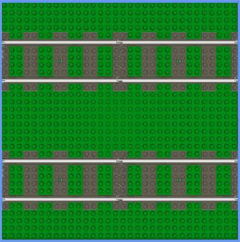
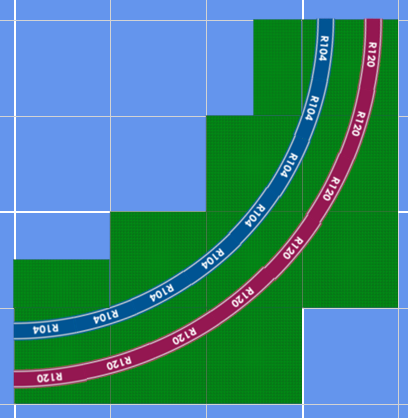

Offline snapshot prepared 2026-11-24 from NILTC.org.
The two mainlines run along the front. Their centers are 8 and 24 studs from the front edge, with a two-plate height above the baseplate. Ballasted track should be 12 studs wide.
Leave 5 inches of straight track between a curve, switch, or bridge and the next such event. After an S-curve, leave 20 inches before the next event.

The outer mainline uses R120 and the inner mainline uses R104. The corner occupies a 40-inch square area. R104 is the minimum mainline radius.

Read the saved source article for the original wording.